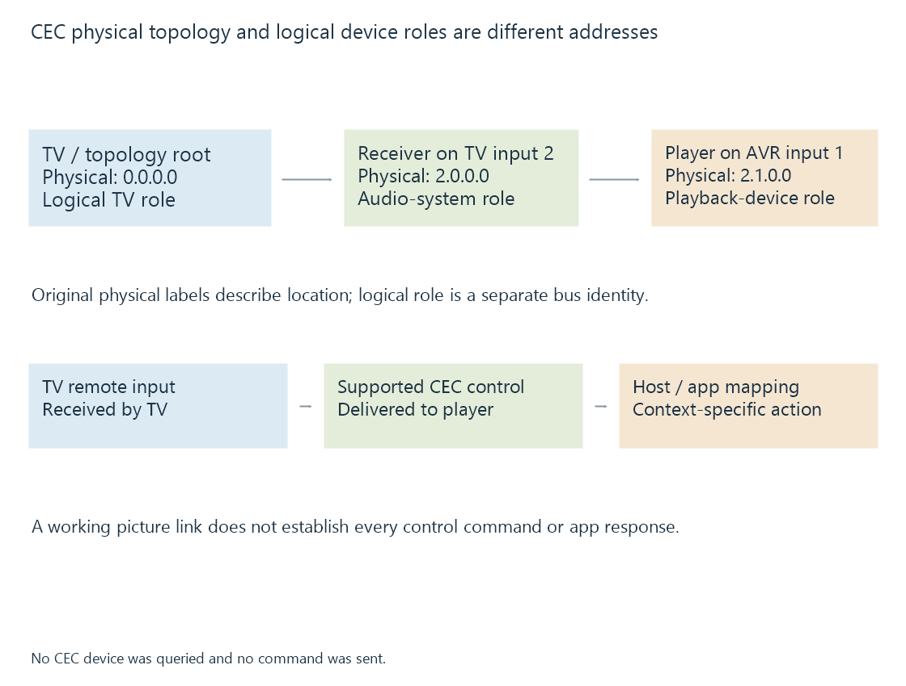

HDMI-CEC control and device addressing
HDMI-CEC carries device-control messages on a control path whose addressing and application handling remain distinct from HDMI picture and audio transport.
HDMI-CEC, Consumer Electronics Control, carries control messages between participating HDMI devices. It can support actions such as input selection, standby or forwarded user controls through an implemented arrangement.
It does not carry the movie’s picture samples, and it does not by itself decide which action an Emby app performs.
A separate control relationship
| Function | Relevant path |
|---|---|
| Picture/audio presentation | Selected HDMI transport |
| Return audio | Supported ARC/eARC relationship |
| Device-control messages | CEC |
| App navigation | Host input handling and application mapping |
A picture working over HDMI does not prove that the source, receiver and TV all expose the desired CEC control behavior.
CEC can also reach a device without the target application using the resulting event. The control message and the app action are separate stages.
Physical and logical addresses answer different questions
A physical address describes location in the HDMI topology. A logical address identifies a participating device role on the CEC control bus.
Use this original topology illustration:
TV: 0.0.0.0
Receiver on TV input 2: 2.0.0.0
Player on receiver input 1: 2.1.0.0
The player could also have a logical playback-device address. That logical address is not obtained by treating 2.1.0.0 as the same number.

The labels above illustrate the hierarchical physical relationship. They are not a captured device report or a promise of address assignments on every installation.
The source’s visible physical-address context can change when it moves to another port or receiver arrangement.
A remote press still needs an application route
One possible control sequence is:
TV receives remote input
-> TV sends supported CEC user control
-> external player handles the message
-> host/app maps it to an action
The external player can expose that event as an input key or handle it through another platform-specific interface. The app then decides what the action means in the current view.
Volume can be consumed by an audio device rather than forwarded to the player’s navigation. A standby action belongs to device state rather than to a media-seek command.
For Emby playback, identify which device receives the original remote input and which device is supposed to perform the action.
Support is specific to the command and route
A vendor’s control label may cover a set of CEC features, not every possible command. Firmware, adapter and receiver behavior can also affect the path.
The public Linux CEC interface illustrates that kernel/device handling and userspace control can have different responsibilities. Other platforms expose their own routes.
See Also
- HDMI Audio Return Channel (ARC)
- Infrared remote controls
- Bluetooth remote controls
- Human Interface Devices (HID)